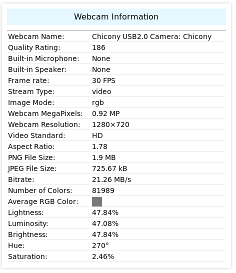
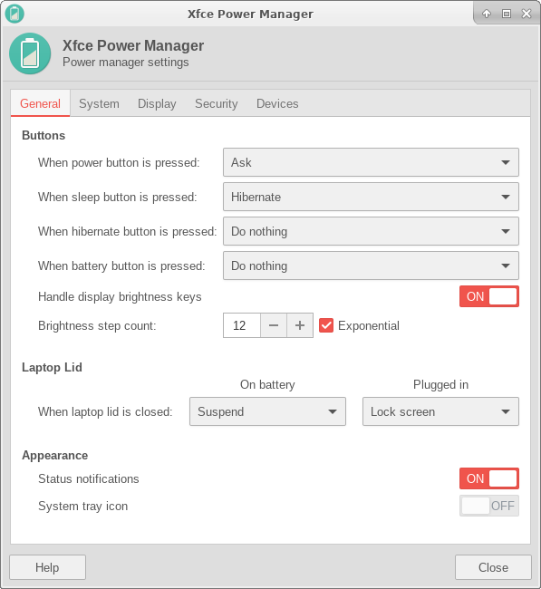
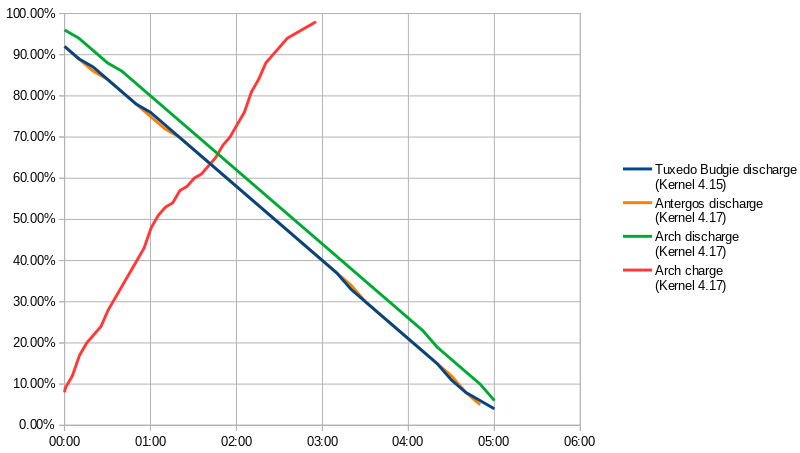

Review TUXEDO InfinityBook Pro 14 v3 (2018)¶
This blog post is in English despite all previous posts being in German. I just assume some international folks might be interested in this review too. I myself am located in Munich, Germany.
As the title states, I’m going to review the Tuxedo InfinityBook Pro 14 v3 which from my perspective plays in the league of a Dell XPS 13/15 or Lenovo T480 when it comes to Linux laptops in the year 2018. Tuxedo is a German company, based in Königsbrunn near Augsburg. The company mainly offers Linux compatible PCs and laptops.
The laptop has already gotten some media attention:
Background¶
I’m a SW developer on Linux platforms since years. My former Laptop was a Lenovo E420s which came into the years in terms of battery life, CPU performance, RAM size and performance and portability (weight, size).
So I was looking for a new Linux compatible laptop with state-of-the-art hardware. My wish list items in order of priority were:
- CPU 8th generation Intel CPU (Core i5 8xxx, Core i7 8xxx)
- RAM at least 16GB
- Linux tested compatibility of most relevant components
- Display ~14 inches
- Weight <1.8kg
- Build quality should be reasonable
- Ethernet RJ45 gigabit without adapter
- Web cam with a reasonable positioning
- Keyboard German layout
- Keyboard backlight available
- Keyboard typing must be fun (I like hard and short key strokes)
- Quiet CPU fan / silent without load
- Intel ME option to disable the Intel ME and generally speaking, I like open hardware
Some notes on above items with the numbers referring to above list:
The 8th generation Intel CPUs (model name Kaby Lake Refresh) for mobile devices feature 4 physical cores. With hyperthreading the system has 8 logical cores available. This is a huge benefit when running virtual machines and doing CPU intensive stuff in the background.
A laptop with less than 16GB of RAM does not make sense these days. Any laptop gets a bonus if RAM can be expanded up to 32GB. I don’t buy laptops often (the Lenovo E420s is from 2011), so upgradeability is master.
The Linux compatibility is a major problem. It’s not easy to find information concerning new laptops if they are not offered with a Linux distribution preinstalled by the vendor (like the Dell XPS Developer Edition). Thinkpads are also known to work well in Linux environments.
Another point of interest is the definition of ‚Linux compatible‘. A laptop contains a lot hardware which may be fully compatible, partly compatible or not-at-all compatible. At a minimum, I expect:
Display works with brightness control
Battery life is higher than 5 hours on a recent Linux kernel (4.15 to 4.17) under ‚normal‘ circumstances (development, presentation). Problems may arise with CPUs not going into deep idle states or wake-up events being continuously fired. This may also involve peripheral.
Touchpad works with multi touch gestures (2-finger scrolling and emulated right/middle mouse buttons clicks).
No restriction to a specific distribution as I will install any distribution I like. Currently I’m on Xubuntu (Ubuntu + Xfce) but I want to test Arch + Xfce. The videos of this German guy convinced me that Arch is the next logical step after running Ubuntu or other Debian based distributions. Thanks Nick for your great videos.
A great source for Linux laptop compatibility is the Arch wiki (in which this Tuxedo laptop is still missing).
Nice to have are:
- Special keys work out of the box
- SD card reader
- LED indicators
13.3 inch displays are too small for mobile development from my POV and larger displays lack portability.
The weight is relevant although almost all current ultrabooks of 14 inch display size fulfill my constraint.
I like Aluminium not plastic and warp resistant laptop bodies and displays.
Having an real ethernet port without bringing an adapter is just nice.
Many vendors build the web cam below the display or even into the keyboard. This is not a user friendly design decision. I use video chat throughout my day and colleagues don’t want to look at me through the eyes of a fish…
I like a Germany keyboard layout because I live in Germany. It’s not an absolute must because I can use a German keymap without having the right symbols printed on the keys but it’s a plus if I can get it.
Having a background light for the keyboard is a benefit when working in dark environments like during the night or also on low-light environments during the day. My current Lenovo E420s has a small light above the display which shines on the keyboard; in dark environment you can barely see anything, so I’d rather go with a background illumination.
This is low on my priority list because most of the time I have an external keyboard attached. But SW development is a keyboard centric task so a good keyboard is a plus.
When not running CPU intensive tasks, I don’t want the CPU fan to run. If the fan runs, I want the noise to be ‚acceptable‘.
I use a lot of open source software, I participate in open source development, I like the Free Software Foundation and the Linux project in general. Open source has a high relevance for companies too (think of Linux, OpenStack or Kubernetes). Unfortunately, there are no vendors on the market that feature open hardware. The whole industry of current desktop computing is build around Intel, AMD or SoCs that have no open specification. That’s a pity. If I’m going for current hardware, I cannot follow the hardware proposals of the FSF and choose 5 years old hardware. Then I could also stick with my old Lenovo. Having the option to run Coreboot and remove/deactivate the Intel ME and AMD PSP would really be a huge benefit for me.
There are companies like Purism or system76 that intend to deactivate the Intel ME on current CPUs. They do a good job but reverse engineering takes times, so there’s no option for the latest hardware. I’d love to live in a world of open hardware, open firmware and companies that will fail when bringing non-open hardware to the market. But the truth is, I need an affordable and current product to run the applications I like.
At the end, there is no product on the market that fulfills the priority items on my wish list, so I had to move this point to the end :(
I am not particularly interested in USB-C, Thunderbolt or docking stations. However, if these work with the model of my choice I’m happy too. Also USB-C charging is nice to have. As I don’t have any USB-C hardware or chargers already, I need a new charger anyway.
Candidates¶
I chose between the following models
-
Pros
- good Linux support
- latest hardware
- Germany keyboard layout
- build quality
Cons
- 13.3 inch display is too small
- price tag
-
Pros
- basically good Linux support
- latest hardware
- build quality
- Germany keyboard layout
Cons
- the finger print sensor won’t work currently but I think the reverse engineered driver might be available soon for T480: https://github.com/nmikhailov/Validity90
- price tag (in my configuration above 1.800€ brutto)
- I don’t like the switched Strg/Ctrl and Fn keys on my E420S and the T480 has the same layout. When switching between external keyboards and the laptop keyboard I always got confused.
-
Pros
- latest hardware
Cons
- at the time of my decision not yet available in Germany
- bad web cam positioning (built into keyboard)
- price tag
-
Tuxedo commonly buys its parts from the Taiwan company Clevo. The base of this laptop seems to be the Clevo N141WU.
Pros
- latest hardware (RAM up to 32GB)
- Germany keyboard layout
- build quality, weight
- ethernet port
- display size
- web cam positioning
- price (in my configuration 1.256€ brutto)
- available in Germany
Cons
- unknown support for Linux distributions other than Ubuntu / openSuse (I’m interested in Arch)
-
Pros
- Good Linux support
- deactivated Intel ME
- hardware kill switches
- support a small company with outstanding ethical goals
Cons
- 13.3 inch display a bit too small
- only 7th generation Intel processors
- can’t get it to Germany without paying customs duty
- price tag
-
This laptop seems to be the same Clevo N141WU base model as the Tuxedo InfinityBook Pro 14 v3. I won’t buy from abroad (here: US) if I get the same model from a local company.
Manjaro Special Edition Spitfire (Station X)
This laptop seems to be built on top the same Clevo N141WU base model as the Tuxedo InfinityBook Pro 14 v3. I won’t buy from abroad (here: GB) if I get the same model from a local company. However I noticed that Arch should basically be working with the Clevo models as Manjaro is also Arch based.
Decision¶
The most relevant candidates were the Lenovo T480 and the Tuxedo InfinityBook Pro 14 v3. I chose Tuxedo mainly because I did not want to pay 600€ more for the Lenovo brand. After all, I don’t regret my decision.
Prior buying I contacted the Tuxedo support because I had some open questions that I could not find anything about online:
Is RAM dual channel mode possible?
-> yes, if two RAM modules are chosen in the configuration (2x8GB or 2x16GB)
Are there any working USB-C / Thunderbolt docking stations on the market?
-> this model should work with DisplayLink drivers (I don’t own the docking station yet)
Is charging through USB-C possible?
-> no
Are the Tuxedo scripts adaptable to other distributions (especially Arch based)?
-> no information, they don’t test whether other distros work but they claim to be interested in any tests
Which web cam model is used?
-> 1.0M HD video camera USB2.0 – Hersteller Chicony – Treiber-Version 10.0.17134.1
Tuxedo answered within one day in all cases. The support was always friendly and tried hard to convince me. They even offered the option to send back the device if I’m not satisfied (although I’m a business customer).
Review¶
The review was done running Arch Linux with the Xfce desktop. Only for the battery tests I installed other distros.
Package¶
The laptop arrived in my office only 4 working day after the order. The package contained
- the laptop
- 2 chargers (I ordered one extra)
- a driver CD
- a rescue USB stick
- some merchandising articles
- pens
- two big Linux penguin posters with some basic bash commands - they were squeezed into the box and got a bit crumpled
- an Ubuntu neckstrap
Build quality¶
My general impression is quite positive. The aluminium body looks and feels great. I have no problems with fingerprints on the panel top like with the Lenovo.
The display outer surface is made of aluminium, the inner surface (borders around the display) is made of plastic. According to Tuxedo this improves WLAN / BT reception.
Speed¶
There is nothing to write about the performance. It’s outstanding.
However I did not specifically run any benchmarks.
When running dmesg I see throttling events caused by high temperatures from time to time:
CPU6: Core temperature above threshold, cpu clock throttled (total events = 1293)
CPU2: Core temperature above threshold, cpu clock throttled (total events = 1293)
CPU2: Package temperature above threshold, cpu clock throttled (total events = 5027)
CPU6: Package temperature above threshold, cpu clock throttled (total events = 5027)
CPU0: Package temperature above threshold, cpu clock throttled (total events = 5027)
CPU1: Package temperature above threshold, cpu clock throttled (total events = 5027)
CPU5: Package temperature above threshold, cpu clock throttled (total events = 5027)
CPU4: Package temperature above threshold, cpu clock throttled (total events = 5027)
CPU7: Package temperature above threshold, cpu clock throttled (total events = 5027)
CPU3: Package temperature above threshold, cpu clock throttled (total events = 5027)
CPU6: Core temperature/speed normal
CPU2: Core temperature/speed normal
CPU6: Package temperature/speed normal
CPU2: Package temperature/speed normal
CPU0: Package temperature/speed normal
CPU3: Package temperature/speed normal
CPU4: Package temperature/speed normal
CPU7: Package temperature/speed normal
CPU1: Package temperature/speed normal
CPU5: Package temperature/speed normal
I can’t state what the influence on speed is. The fan does not run faster in these scenarios. Currently it’s high summer so the environment temperature is between 25°C and 30°C.
Display¶
- It’s very clear and sharp.
- The maximum brightness is more than enough for my use cases.
- There are only minor brightness differences in the corners.
- The display is nonreflecting which I like.
- The viewing angle is really good.
- The display can be opened to 135° (which could be more).
A negative point is that the display cannot be opened with one hand because then the whole laptop moves.
Output of ls* commands¶
lscpu¶
Architecture: x86_64
CPU op-mode(s): 32-bit, 64-bit
Byte Order: Little Endian
CPU(s): 8
On-line CPU(s) list: 0-7
Thread(s) per core: 2
Core(s) per socket: 4
Socket(s): 1
NUMA node(s): 1
Vendor ID: GenuineIntel
CPU family: 6
Model: 142
Model name: Intel(R) Core(TM) i7-8550U CPU @ 1.80GHz
Stepping: 10
CPU MHz: 800.012
CPU max MHz: 4000.0000
CPU min MHz: 400.0000
BogoMIPS: 3985.00
Virtualization: VT-x
L1d cache: 32K
L1i cache: 32K
L2 cache: 256K
L3 cache: 8192K
NUMA node0 CPU(s): 0-7
Flags: fpu vme de pse tsc msr pae mce cx8 apic sep mtrr pge mca cmov pat pse36 clflush dts acpi mmx fxsr sse sse2 ss ht tm pbe syscall nx pdpe1gb rdtscp lm constant_tsc art arch_perfmon pebs bts rep_good nopl xtopology nonstop_tsc cpuid aperfmperf tsc_known_freq pni pclmulqdq dtes64 monitor ds_cpl vmx est tm2 ssse3 sdbg fma cx16 xtpr pdcm pcid sse4_1 sse4_2 x2apic movbe popcnt tsc_deadline_timer aes xsave avx f16c rdrand lahf_lm abm 3dnowprefetch cpuid_fault epb invpcid_single pti ibrs ibpb stibp tpr_shadow vnmi flexpriority ept vpid fsgsbase tsc_adjust bmi1 avx2 smep bmi2 erms invpcid mpx rdseed adx smap clflushopt intel_pt xsaveopt xsavec xgetbv1 xsaves dtherm ida arat pln pts hwp hwp_notify hwp_act_window hwp_epp
lshw short¶
H/W path Device Class Description
======================================================
system N14xWU (Not Applicable)
/0 bus N14xWU
/0/0 memory 64KiB BIOS
/0/14 memory 16GiB System Memory
/0/14/0 memory 8GiB SODIMM DDR4 Synchronous Unbuffered (Unregistered) 2400 MHz (0.4 ns)
/0/14/1 memory 8GiB SODIMM DDR4 Synchronous Unbuffered (Unregistered) 2400 MHz (0.4 ns)
/0/19 memory 256KiB L1 cache
/0/1a memory 1MiB L2 cache
/0/1b memory 8MiB L3 cache
/0/1c processor Intel(R) Core(TM) i7-8550U CPU @ 1.80GHz
/0/100 bridge Xeon E3-1200 v6/7th Gen Core Processor Host Bridge/DRAM Registers
/0/100/2 display UHD Graphics 620
/0/100/14 bus Sunrise Point-LP USB 3.0 xHCI Controller
/0/100/14/0 usb1 bus xHCI Host Controller
/0/100/14/0/4 multimedia Chicony USB2.0 Camera
/0/100/14/0/5 communication Bluetooth wireless interface
/0/100/14/1 usb2 bus xHCI Host Controller
/0/100/14.2 generic Sunrise Point-LP Thermal subsystem
/0/100/16 communication Sunrise Point-LP CSME HECI #1
/0/100/17 storage Sunrise Point-LP SATA Controller [AHCI mode]
/0/100/1c bridge Sunrise Point-LP PCI Express Root Port #1
/0/100/1c.4 bridge Sunrise Point-LP PCI Express Root Port #5
/0/100/1c.4/0 generic RTL8411B PCI Express Card Reader
/0/100/1c.4/0.1 enp58s0f1 network RTL8111/8168/8411 PCI Express Gigabit Ethernet Controller
/0/100/1c.5 bridge Sunrise Point-LP PCI Express Root Port #6
/0/100/1c.5/0 wlp59s0 network Wireless 8265 / 8275
/0/100/1d bridge Sunrise Point-LP PCI Express Root Port #9
/0/100/1d/0 storage NVMe SSD Controller SM981/PM981
/0/100/1f bridge Intel(R) 100 Series Chipset Family LPC Controller/eSPI Controller - 9D4E
/0/100/1f.2 memory Memory controller
/0/100/1f.3 multimedia Sunrise Point-LP HD Audio
/0/100/1f.4 bus Sunrise Point-LP SMBus
lshw¶
tuxe
description: Notebook
product: N14xWU (Not Applicable)
vendor: TUXEDO
version: Not Applicable
serial: Not Applicable
width: 4294967295 bits
capabilities: smbios-3.0 dmi-3.0 smp vsyscall32
configuration: boot=normal chassis=notebook family=Not Applicable sku=Not Applicable uuid=80FA5B5C-3810-0000-0000-000000000000
*-core
description: Motherboard
product: N14xWU
vendor: TUXEDO
physical id: 0
version: Not Applicable
serial: Not Applicable
slot: Not Applicable
*-firmware
description: BIOS
vendor: American Megatrends Inc.
physical id: 0
version: 1.05.02
date: 03/26/2018
size: 64KiB
capacity: 6080KiB
capabilities: pci upgrade shadowing cdboot bootselect edd int5printscreen int9keyboard int17printer acpi usb biosbootspecification uefi
*-memory
description: System Memory
physical id: 14
slot: System board or motherboard
size: 16GiB
*-bank:0
description: SODIMM DDR4 Synchronous Unbuffered (Unregistered) 2400 MHz (0.4 ns)
product: BLS8G4S240FSD.16FBD
vendor: 859B
physical id: 0
serial: A817A478
slot: ChannelA-DIMM0
size: 8GiB
width: 64 bits
clock: 2400MHz (0.4ns)
*-bank:1
description: SODIMM DDR4 Synchronous Unbuffered (Unregistered) 2400 MHz (0.4 ns)
product: BLS8G4S240FSD.16FBD
vendor: 859B
physical id: 1
serial: A817A419
slot: ChannelB-DIMM0
size: 8GiB
width: 64 bits
clock: 2400MHz (0.4ns)
*-cache:0
description: L1 cache
physical id: 19
slot: L1 Cache
size: 256KiB
capacity: 256KiB
capabilities: synchronous internal write-back unified
configuration: level=1
*-cache:1
description: L2 cache
physical id: 1a
slot: L2 Cache
size: 1MiB
capacity: 1MiB
capabilities: synchronous internal write-back unified
configuration: level=2
*-cache:2
description: L3 cache
physical id: 1b
slot: L3 Cache
size: 8MiB
capacity: 8MiB
capabilities: synchronous internal write-back unified
configuration: level=3
*-cpu
description: CPU
product: Intel(R) Core(TM) i7-8550U CPU @ 1.80GHz
vendor: Intel Corp.
physical id: 1c
bus info: cpu@0
version: Intel(R) Core(TM) i7-8550U CPU @ 1.80GHz
serial: To Be Filled By O.E.M.
slot: U3E1
size: 3388MHz
capacity: 4005MHz
width: 64 bits
clock: 100MHz
capabilities: x86-64 fpu fpu_exception wp vme de pse tsc msr pae mce cx8 apic sep mtrr pge mca cmov pat pse36 clflush dts acpi mmx fxsr sse sse2 ss ht tm pbe syscall nx pdpe1gb rdtscp constant_tsc art arch_perfmon pebs bts rep_good nopl xtopology nonstop_tsc cpuid aperfmperf tsc_known_freq pni pclmulqdq dtes64 monitor ds_cpl vmx est tm2 ssse3 sdbg fma cx16 xtpr pdcm pcid sse4_1 sse4_2 x2apic movbe popcnt tsc_deadline_timer aes xsave avx f16c rdrand lahf_lm abm 3dnowprefetch cpuid_fault epb invpcid_single pti ibrs ibpb stibp tpr_shadow vnmi flexpriority ept vpid fsgsbase tsc_adjust bmi1 avx2 smep bmi2 erms invpcid mpx rdseed adx smap clflushopt intel_pt xsaveopt xsavec xgetbv1 xsaves dtherm ida arat pln pts hwp hwp_notify hwp_act_window hwp_epp cpufreq
configuration: cores=4 enabledcores=4 threads=8
*-pci
description: Host bridge
product: Xeon E3-1200 v6/7th Gen Core Processor Host Bridge/DRAM Registers
vendor: Intel Corporation
physical id: 100
bus info: pci@0000:00:00.0
version: 08
width: 32 bits
clock: 33MHz
*-display
description: VGA compatible controller
product: UHD Graphics 620
vendor: Intel Corporation
physical id: 2
bus info: pci@0000:00:02.0
version: 07
width: 64 bits
clock: 33MHz
capabilities: pciexpress msi pm vga_controller bus_master cap_list rom
configuration: driver=i915 latency=0
resources: irq:16 memory:db000000-dbffffff memory:90000000-9fffffff ioport:f000(size=64) memory:c0000-dffff
*-usb
description: USB controller
product: Sunrise Point-LP USB 3.0 xHCI Controller
vendor: Intel Corporation
physical id: 14
bus info: pci@0000:00:14.0
version: 21
width: 64 bits
clock: 33MHz
capabilities: pm msi xhci bus_master cap_list
configuration: driver=xhci_hcd latency=0
resources: irq:16 memory:dc310000-dc31ffff
*-usbhost:0
product: xHCI Host Controller
vendor: Linux 4.17.14-arch1-1-ARCH xhci-hcd
physical id: 0
bus info: usb@1
logical name: usb1
version: 4.17
capabilities: usb-2.00
configuration: driver=hub slots=12 speed=480Mbit/s
*-usb:0
description: Video
product: Chicony USB2.0 Camera
vendor: Sonix Technology Co., Ltd.
physical id: 4
bus info: usb@1:4
version: 54.03
capabilities: usb-2.00
configuration: driver=uvcvideo maxpower=500mA speed=480Mbit/s
*-usb:1
description: Bluetooth wireless interface
vendor: Intel Corp.
physical id: 5
bus info: usb@1:5
version: 0.10
capabilities: bluetooth usb-2.00
configuration: driver=btusb maxpower=100mA speed=12Mbit/s
*-usbhost:1
product: xHCI Host Controller
vendor: Linux 4.17.14-arch1-1-ARCH xhci-hcd
physical id: 1
bus info: usb@2
logical name: usb2
version: 4.17
capabilities: usb-3.00
configuration: driver=hub slots=6 speed=5000Mbit/s
*-generic
description: Signal processing controller
product: Sunrise Point-LP Thermal subsystem
vendor: Intel Corporation
physical id: 14.2
bus info: pci@0000:00:14.2
version: 21
width: 64 bits
clock: 33MHz
capabilities: pm msi cap_list
configuration: driver=intel_pch_thermal latency=0
resources: irq:18 memory:dc32e000-dc32efff
*-communication
description: Communication controller
product: Sunrise Point-LP CSME HECI #1
vendor: Intel Corporation
physical id: 16
bus info: pci@0000:00:16.0
version: 21
width: 64 bits
clock: 33MHz
capabilities: pm msi bus_master cap_list
configuration: driver=mei_me latency=0
resources: irq:16 memory:dc32d000-dc32dfff
*-storage
description: SATA controller
product: Sunrise Point-LP SATA Controller [AHCI mode]
vendor: Intel Corporation
physical id: 17
bus info: pci@0000:00:17.0
version: 21
width: 32 bits
clock: 66MHz
capabilities: storage msi pm ahci_1.0 bus_master cap_list
configuration: driver=ahci latency=0
resources: irq:16 memory:dc328000-dc329fff memory:dc32c000-dc32c0ff ioport:f090(size=8) ioport:f080(size=4) ioport:f060(size=32) memory:dc32b000-dc32b7ff
*-pci:0
description: PCI bridge
product: Sunrise Point-LP PCI Express Root Port #1
vendor: Intel Corporation
physical id: 1c
bus info: pci@0000:00:1c.0
version: f1
width: 32 bits
clock: 33MHz
capabilities: pci pciexpress msi pm normal_decode bus_master cap_list
configuration: driver=pcieport
resources: irq:16 ioport:2000(size=4096) memory:c4000000-da0fffff ioport:a0000000(size=570425344)
*-pci:1
description: PCI bridge
product: Sunrise Point-LP PCI Express Root Port #5
vendor: Intel Corporation
physical id: 1c.4
bus info: pci@0000:00:1c.4
version: f1
width: 32 bits
clock: 33MHz
capabilities: pci pciexpress msi pm normal_decode bus_master cap_list
configuration: driver=pcieport
resources: irq:16 ioport:e000(size=4096) memory:dc200000-dc2fffff
*-generic
description: Unassigned class
product: RTL8411B PCI Express Card Reader
vendor: Realtek Semiconductor Co., Ltd.
physical id: 0
bus info: pci@0000:3a:00.0
version: 01
width: 32 bits
clock: 33MHz
capabilities: pm msi pciexpress msix vpd bus_master cap_list rom
configuration: driver=rtsx_pci latency=0
resources: irq:17 memory:dc215000-dc215fff memory:dc200000-dc20ffff
*-network
description: Ethernet interface
product: RTL8111/8168/8411 PCI Express Gigabit Ethernet Controller
vendor: Realtek Semiconductor Co., Ltd.
physical id: 0.1
bus info: pci@0000:3a:00.1
logical name: enp58s0f1
version: 12
serial: 80:fa:5b:5c:38:10
size: 10Mbit/s
capacity: 1Gbit/s
width: 64 bits
clock: 33MHz
capabilities: pm msi pciexpress msix vpd bus_master cap_list ethernet physical tp mii 10bt 10bt-fd 100bt 100bt-fd 1000bt 1000bt-fd autonegotiation
configuration: autonegotiation=on broadcast=yes driver=r8169 driverversion=2.3LK-NAPI duplex=half firmware=rtl8411-2_0.0.1 07/08/13 latency=0 link=no multicast=yes port=MII speed=10Mbit/s
resources: irq:16 ioport:e000(size=256) memory:dc214000-dc214fff memory:dc210000-dc213fff
*-pci:2
description: PCI bridge
product: Sunrise Point-LP PCI Express Root Port #6
vendor: Intel Corporation
physical id: 1c.5
bus info: pci@0000:00:1c.5
version: f1
width: 32 bits
clock: 33MHz
capabilities: pci pciexpress msi pm normal_decode bus_master cap_list
configuration: driver=pcieport
resources: irq:17 memory:dc100000-dc1fffff
*-network
description: Wireless interface
product: Wireless 8265 / 8275
vendor: Intel Corporation
physical id: 0
bus info: pci@0000:3b:00.0
logical name: wlp59s0
version: 78
serial: 30:24:32:f5:9e:2f
width: 64 bits
clock: 33MHz
capabilities: pm msi pciexpress bus_master cap_list ethernet physical wireless
configuration: broadcast=yes driver=iwlwifi driverversion=4.17.14-arch1-1-ARCH firmware=36.e91976c0.0 ip=192.168.0.10 latency=0 link=yes multicast=yes wireless=IEEE 802.11
resources: irq:17 memory:dc100000-dc101fff
*-pci:3
description: PCI bridge
product: Sunrise Point-LP PCI Express Root Port #9
vendor: Intel Corporation
physical id: 1d
bus info: pci@0000:00:1d.0
version: f1
width: 32 bits
clock: 33MHz
capabilities: pci pciexpress msi pm normal_decode bus_master cap_list
configuration: driver=pcieport
resources: irq:16 memory:dc000000-dc0fffff
*-storage
description: Non-Volatile memory controller
product: NVMe SSD Controller SM981/PM981
vendor: Samsung Electronics Co Ltd
physical id: 0
bus info: pci@0000:3c:00.0
version: 00
width: 64 bits
clock: 33MHz
capabilities: storage pm msi pciexpress msix nvm_express bus_master cap_list
configuration: driver=nvme latency=0
resources: irq:16 memory:dc000000-dc003fff
*-isa
description: ISA bridge
product: Intel(R) 100 Series Chipset Family LPC Controller/eSPI Controller - 9D4E
vendor: Intel Corporation
physical id: 1f
bus info: pci@0000:00:1f.0
version: 21
width: 32 bits
clock: 33MHz
capabilities: isa bus_master
configuration: latency=0
*-memory UNCLAIMED
description: Memory controller
product: Sunrise Point-LP PMC
vendor: Intel Corporation
physical id: 1f.2
bus info: pci@0000:00:1f.2
version: 21
width: 32 bits
clock: 33MHz (30.3ns)
configuration: latency=0
resources: memory:dc324000-dc327fff
*-multimedia
description: Audio device
product: Sunrise Point-LP HD Audio
vendor: Intel Corporation
physical id: 1f.3
bus info: pci@0000:00:1f.3
version: 21
width: 64 bits
clock: 33MHz
capabilities: pm msi bus_master cap_list
configuration: driver=snd_hda_intel latency=32
resources: irq:16 memory:dc320000-dc323fff memory:dc300000-dc30ffff
*-serial
description: SMBus
product: Sunrise Point-LP SMBus
vendor: Intel Corporation
physical id: 1f.4
bus info: pci@0000:00:1f.4
version: 21
width: 64 bits
clock: 33MHz
configuration: driver=i801_smbus latency=0
resources: irq:16 memory:dc32a000-dc32a0ff ioport:f040(size=32)
lsusb¶
Bus 002 Device 001: ID 1d6b:0003 Linux Foundation 3.0 root hub
Bus 001 Device 003: ID 8087:0a2b Intel Corp.
Bus 001 Device 002: ID 04f2:b649 Chicony Electronics Co., Ltd
Bus 001 Device 001: ID 1d6b:0002 Linux Foundation 2.0 root hub
lspci¶
00:00.0 Host bridge: Intel Corporation Xeon E3-1200 v6/7th Gen Core Processor Host Bridge/DRAM Registers (rev 08)
00:02.0 VGA compatible controller: Intel Corporation UHD Graphics 620 (rev 07)
00:14.0 USB controller: Intel Corporation Sunrise Point-LP USB 3.0 xHCI Controller (rev 21)
00:14.2 Signal processing controller: Intel Corporation Sunrise Point-LP Thermal subsystem (rev 21)
00:16.0 Communication controller: Intel Corporation Sunrise Point-LP CSME HECI #1 (rev 21)
00:17.0 SATA controller: Intel Corporation Sunrise Point-LP SATA Controller [AHCI mode] (rev 21)
00:1c.0 PCI bridge: Intel Corporation Sunrise Point-LP PCI Express Root Port #1 (rev f1)
00:1c.4 PCI bridge: Intel Corporation Sunrise Point-LP PCI Express Root Port #5 (rev f1)
00:1c.5 PCI bridge: Intel Corporation Sunrise Point-LP PCI Express Root Port #6 (rev f1)
00:1d.0 PCI bridge: Intel Corporation Sunrise Point-LP PCI Express Root Port #9 (rev f1)
00:1f.0 ISA bridge: Intel Corporation Intel(R) 100 Series Chipset Family LPC Controller/eSPI Controller - 9D4E (rev 21)
00:1f.2 Memory controller: Intel Corporation Sunrise Point-LP PMC (rev 21)
00:1f.3 Audio device: Intel Corporation Sunrise Point-LP HD Audio (rev 21)
00:1f.4 SMBus: Intel Corporation Sunrise Point-LP SMBus (rev 21)
3a:00.0 Unassigned class [ff00]: Realtek Semiconductor Co., Ltd. RTL8411B PCI Express Card Reader (rev 01)
3a:00.1 Ethernet controller: Realtek Semiconductor Co., Ltd. RTL8111/8168/8411 PCI Express Gigabit Ethernet Controller (rev 12)
3b:00.0 Network controller: Intel Corporation Wireless 8265 / 8275 (rev 78)
3c:00.0 Non-Volatile memory controller: Samsung Electronics Co Ltd NVMe SSD Controller SM981/PM981
Keyboard¶
The keyboard is a dream. Short and hard key strokes, all keys are easily reachable and the key size is well chosen. The big arrow keys are very welcome compared to my old Lenovo device. As a Vim user, I don’t need the arrow keys all the time (hjkl style) but a lot of applications don’t feature Vim keymaps. The super key has a nifty little penguin symbol. The keyboard backlight can be changed in 6 steps (off + 5 steps) using Fn+F4. That works out of the box in all tested distributions.
Webcam¶
I tested the webcam in Cheese and Riot (the Matrix chat client). I had no problems, my video stream looks good on my side on also for my colleagues.
Here’s a screenshot of the test results at https://webcamtests.com:
Arch Linux¶
Tuxedo encourages users to install other Linux distributions too. For Debian based distributions (like all the Ubuntu derivatives) they provide a bash install script to make every aspect of the Laptop work. For Arch there is no such script so I really hoped that most functions work out-of-the-box. And actually that’s the case.
I installed Arch+Xfce with an LVM on LUKS setup and use systemd-boot as bootloader.
Function keys¶
These are the keys that - pressed with Fn - provide special functions:
| key | function | status |
|---|---|---|
| °/^ | play/pause | works |
| F1 | touchpad on/off | does not work |
| F2 | LCD off | works |
| F3 | mute | works |
| F4 | keyboard background illumination | works |
| F5 | lower audio volume | works |
| F6 | increase audio volume | works |
| F7 | open display configuration | works |
| F8 | screen brightness down | works |
| F9 | screen brightness up | works |
| F10 | start camera? | ? |
| F11 | flight mode | does not work |
| F12 | sleep mode | works |
| Num | activate number block | works |
Fn+F1 does not work and is not recognized when running xev.
Fn+F11 does not work but the key combo is recognized as XF86RFKill by xev.
Assigning a small script that switches the hardware modules should be possible.
Brightness control¶
With the preinstalled Tuxedo versions of Ubuntu I had no problems changing the screen brightness. The brightness steps are reasonable and on the lowest level, the screen does not switch completely off.
On Arch+Xfce the brightness steps were too big and on the lowest level the screen switches completely off which I find undesirable. The brightness is controlled by the Xfce Power Manager. I actually like Power Manager handling it because it features a nice pop-up notification showing the current brightness (in contrast to e.g. xbacklight which I also tried successfully). To get smaller brightness steps I compiled power manager on my own.
This brings 2 new configuration options:
- Brightness step count
- Exponential flag
The exponential flag brings the advantage of having many small steps at low brightness levels.
I set it like this:
The display still switches completely off after the lowest level is reached but I can live with that.
Hibernate¶
Read the arch wiki article for an overview to suspend/hibernate on Arch.
Hibernate did not work in the first place because of my partitioning and encryption setup. The hibernate started and the laptop switched off. After waking up, it was like it was completely restarted.
I encrypted my Arch system using LVM on LUKS.
I also switched the bootloader from Grub to systemd-boot.
What I missed was the resume hook in /etc/mkinitcpio.conf. It now looks like this:
HOOKS=(base udev autodetect modconf block keyboard keymap encrypt lvm2 resume filesystems fsck)
My systemd-boot configuration looks like this:
$ cat /boot/loader/entries/arch.conf
title Arch Linux
linux /vmlinuz-linux
initrd /initramfs-linux.img
options cryptdevice=UUID=381c18d1-f2ab-411c-906b-5fd354546853:lvm:allow-discards resume=/dev/mapper/vg-swap root=/dev/mapper/vg-root rw pci=nomsi
That means I have a dedicated swap partition which systemd-boot needs as a resume target. I have 16GB RAM installed and my swap partition has a size of 8GB which is enough to get hibernate working.
Suspend¶
Suspend to ram works perfectly out-of-the-box. The startup time with 2 external displays connected is 4 seconds until the login screen is visible and all screens are active.
External displays¶
I want to connect 2 external displays which works perfectly. Both displays only feature HDMI input (no display port).
HDMI worked out of the box, but it took me a while to get the second display working using this USB-C to HDMI adapter. I chose an USB-C to HDMI solution because they feature resolutions up to 4K@60Hz which Mini DisplayPort to HDMI adapters don’t.
When first connecting, the display did not show anything. I asked the Tuxedo support and after one day they told me I had to switch the Display Port interface in BIOS from the display port connector to the USB-C/Thunderbolt port. It works perfectly now.
Even with 2 external displays connected, the laptop screen is still switched on so that I have 3 displays now. My former Lenovo E420s could only address a maximum of 2 displays at a time (which might stem from its age).
Fan¶
Without load, the fan does not start. During the day the fan starts from time to time on low speed. Personally I don’t find it disturbing. This is what I do during my work day:
- some terminal windows open
- Jetbrains PyCharm IDE running
- running youtube videos on Firefox
- VLC for web radio streaming
- Evolution mail client running in the background
- Riot chat application running
Currently it’s about 23°C room temperature here. When the room temperature rose above 30° the fan started more often with higher speeds.
If I run the stress -c 8 command to produce load on all 8 logical cores, the fan increases its speed after 40
seconds. After 80 seconds it’s on max speed.
After removing the load it takes 60 seconds until the fan starts going slower and after 240 seconds it’s amost
unhearable again. 4 minutes are quite a long time and I wonder if that can be tweaked somehow.
I must say I experienced problems with the fan going from off to running state.
2 or 3 times it could not start and just produced an annoyingly high-pitched sound. In these situations I started
stress until the fan started and the problem disappeared. Apparently the fan control has start-up problems when
requesting small fan speeds.
Battery¶
I tested the battery time for various Linux distributions. The test conditions:
- Max screen brightness
- Keyboard illuminated on max level
- No programs open except 2 small terminal windows to write the battery level to a file and show the file contents in the other window.
- No load
- Wifi on, but not connected
- No other peripherals connected
I used this script to write the battery level:
#!/bin/sh
DATE=$(date +%Y-%m-%d:%H:%M:%S)
STATE=$(upower -i /org/freedesktop/UPower/devices/battery_BAT0 | awk '/state/ {print $2}')
PERCENTAGE=$(upower -i /org/freedesktop/UPower/devices/battery_BAT0 | awk '/percentage/ {print $2}')
TTE=$(upower -i /org/freedesktop/UPower/devices/battery_BAT0 | awk '/time to empty/ {print $4}')
TTE_UNIT=$(upower -i /org/freedesktop/UPower/devices/battery_BAT0 | awk '/time to empty/ {print $5}')
TTF=$(upower -i /org/freedesktop/UPower/devices/battery_BAT0 | awk '/time to full/ {print $4}')
TTF_UNIT=$(upower -i /org/freedesktop/UPower/devices/battery_BAT0 | awk '/time to full/ {print $5}')
echo "$DATE $STATE $PERCENTAGE $TTE $TTE_UNIT $TTF $TTF_UNIT" >> battery_status.log
These are the battery discharge/charge times:
The data source can be downloaded here.
The laptops runs for 5 hours on max brightness without load and wifi on. The battery runtime is equal for the preinstalled Tuxedo Budgie on kernel 4.15 as well as for the Arch based distributions on kernel 4.17. Antergos and Arch did have the TLP package installed without any further configuration. Tuxedo preinstalls the Ubuntu laptop-mode-tools package for energy management. Apparently this not differ from TLP in terms of battery runtime - at least in my test.
The charge time from 8% to 98% with the 40W charger is almost 3 hours. The charge and discharge curves are almost linear.
From my point of view the battery life is good. I assume the display on max brightness eats most of the battery life. When taking the laptop with me I commonly reduce the screen brightness so 7 hours should also be possible.
These are the values that Tuxedo got from Notebookcheck:
Idle (ohne WLAN, min Helligkeit): 13h 19min
Surfen über WLAN v1.3: 7h 28min
Last (volle Helligkeit): 3h 00min
Summary¶
I really like my new laptop as everything works like a charm now. The fan management can still be improved in terms regarding speed reduction after removing loads and the start-up problem. This however does not make me spend 600€ more for a ‚brand‘ model which may also have other problems.
Tuxedo as a company was helpful in all topics and deliverey quickly. This is what I want when buying from companies that are not widely known.
If you’ve got any questions, please tell me in the comments section below.